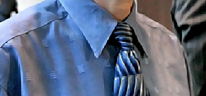
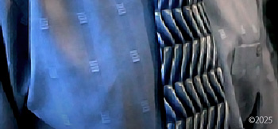
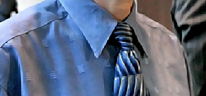
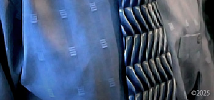

Life in America After 2006
Returning to 2006, after my release in Sonoma County California, I moved to Atlanta. In the months that followed in the same year, I was investigated by the Department of Homeland Security for international child sex trafficking, international child molestation and international murder of children. I was harassed by a neighborhood civic organization that sent out 2,000 letters to residents warning them of the threat - John Mark Karr. I was treated like a sex offender. I was harassed by hordes of law enforcement who would show up with lights flashing even for the mere sitting on a park bench overlooking a golf course in the middle of the day. My life was a living hell. I would not be able to remain in America for long.
In 2007, I was arrested for the battery of my elderly father, Wex Karr. In reality, Wex Karr was holding me against my bedroom wall by the throat. I struggled to release his two very strong hands from my throat which might have possibly left marks on his arm. Brooke Dovgan was a witness to all this and reported it to the police that night.
Earlier that week, my father came into the house with a black eye and told Brooke Dovgan and me that he’d run into a tree limb. I’m sure police blamed his black eye on me as well.
Charges included the prevention of a 911 call. In reality, I merely requested that my father not call the police in reaction to an argument I was in at the time with my then girlfriend, Brooke Dovgan. I did not threaten him in any way. I pleaded with him not to create something major over something trivial. Wex Karr became very angry and threw his own phone down a hallway, hitting the walls and breaking his phone. When police arrived, I was blamed for the broken phone.
In the end, I was ordered to attend anger management classes by a judge after pleading no contest to the charges which, again, was a huge blunder on my part and based on flimsy advice from an attorney. I covered for Wex Karr for the mere fact that I had no place to go and nowhere to live. I look back on it now and wish I’d checked into a homeless shelter and let the world know what really happened to me. All charges were dropped against Wex Karr. Go figure. The charges against me were expunged, for the little that is worth.
It was in that same year that Seung Cho murdered 33 students at Virginia Tech. In his final manifesto, thought to be written during the killings, Cho mentioned me on page 16 stating, "You wanna rape us, John Mark Karrs? Fuck you!" My heart was broken when I heard about this. My fears were confirmed that mass murderers like Cho had me on their minds. I was reminded how very dangerous it was for me to remain in the U.S.
Some have even scoffed at my fearful reaction to Cho's statement in his final manifesto saying, "But Cho is dead now and can't hurt you." A grim reminder of Cho's manifesto resurfaced on August 26, 2015 when WDBJ-TV reporter Alison Parker and cameraman Adam Ward were shot to death during a live interview in Moneta, Virginia by a past fellow journalist, Vester Lee Flanagan aka Bryce Williams. Flanagan also wrote a final manifesto and in it he said: "Also, I was influenced by Seung-Hui Cho. That's my boy right there. He got NEARLY double the amount that Eric Harris and Dylan Klebold got…just sayin'."
Tracking Down the Pedo Trans Freak
My desire to once again have some semblance of privacy and protection reached a point of desperation in 2008 when the name John Mark Karr was legally changed to Alexis Valoran Reich. The attempt was futile. In 2010, the name was sold to the tabloids in an exclusive interview in the National Enquirer with Brooke Dovgan. The person accused of wanting attention was exposed against his will once more. The name was turned into a dot com and served as a tracking device. The John Mark Karr entry at Wikipedia was vacated and changed to Alexis Valoran Reich for the same purposes. Wikipedia has since removed all main entries for either name.
With all that said, I have not been living as a woman named Alexis Valoran Reich for all these years. There was nothing in the aforementioned paragraph that made any such suggestion. This is something that has been published for many years since the 2010 tabloid exposure as a form of malicious mockery. It is not reported by journalists in their articles to show me any respect - quite the contrary. It was a character assassination from the get go in 2010 when it was sold to the tabloids. It's just part of the slaughter campaign. Now that there is so much vitriol for transgender people, it's being touted again. They know it will result in more hatred against me. Transgender people get beaten and sometimes killed. Nothing would make my haters in the public and the media happier. I am not Alexis Valoran Reich, the woman. I am John Mark Karr, the man. Actually, it's a bit more complicated than that but this is what I'm willing to share now.
Never in my life have I labeled myself as 'trans' or 'transgender woman.' As it applies to me personally, the whole concept is repulsive. Furthermore, no scientific proof has ever been publicly presented that proves that I had a sex change operation. For years, this living as a woman lie has been used to track what the public considers, the child raping transgender freak named Alexis Valoran Reich. No person with that name exists on the planet. That lie has helped me to be even more covert. Referring to me as a transgender who uses what the media considers, my transgender freak name, is not reported by journalists in their articles to show me any respect. "What is your preferred pronoun," they ask. My preferred pronoun is FUCK YOU. "What name do you prefer to be called," they ask. Since you're all doing a story about JonBenet Ramsey and me, my name on the night of December 25th 1996 was John Mark Karr and that's all that should fucking matter to all of you.
Most of the events of 2010 revolved around the actions of a vigilante hate group that attempted to derail my life based on their lowly opinion of me and not on any evidence that I was a monster let loose on the world's children. They bought and set up websites using the names John Mark Karr and Alexis Valoran Reich that distributed Karr hate propaganda designed to trace and track me - to rank high in the Google searches for both names to tip off anyone that I was a monster who should be turned over to authorities. These crusaders to protect children from horrible monster John Mark Karr were based in America and consisted of friends, past girlfriends, and even family members. Read more in Circle of Fire's article, Anti-Karr Group.
My Exit From America in 2020
In early summer 2020, I sold my house in America and left the United States. It was never any secret that my house was on the market for sale last year. At one point, it was listed on the MLS. I owned the house for only two years and ten months. In 2017, after living for only weeks in the house, I was exposed to the media by people I had allowed in my home as guests. I was portrayed by the media and treated by the public as a dangerous threat to society though I had never been convicted of a crime.
After the 2017 media exposure, some asked me why I returned to America in the first place. I returned to the US in 2017 because I had every right to do so. I returned to the US in 2017 and bought a house there because I had every right to live in my own home, in my own country, as a citizen of the United States with full blown constitutional rights that is afforded to every natural born citizen who has never been convicted of a crime.
I had those rights but, while there, that did not prevent some Americans from violating them wholesale - walking by my house shouting "Murderer!", "Killer!", "Serial Killer" and "Child Rapist" mostly occurring in broad daylight as I worked to restore my historical home which remains an asset to the community long after I am gone.
I also had the right to sell my house and leave the United States in peace and in privacy without the media exploiting the event and without the accusation that I was running from something. I guarded the sale of my home when it occurred last year not because I was sneaking around like some lowly criminal but because of my concerns that the media would exploit the sale of the house as they had exploited the purchase of it which would have compromised not only my privacy but the privacy of the new owner of the home.
After discovering recently that certain persons planned on profiting from and exploiting the release of this information, I reluctantly decided to post this statement on my website almost seven months after the fact. I was never then nor am I now in any way obligated to inform you: my haters, my enemies, and to whom it may concern - but here it is nonetheless. (January 13th 2021)